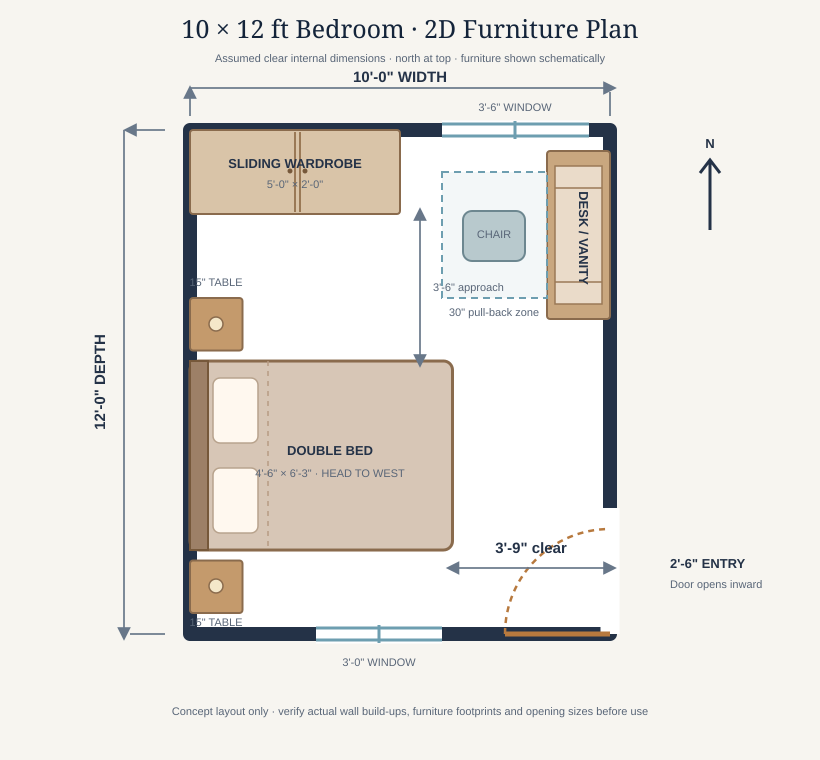
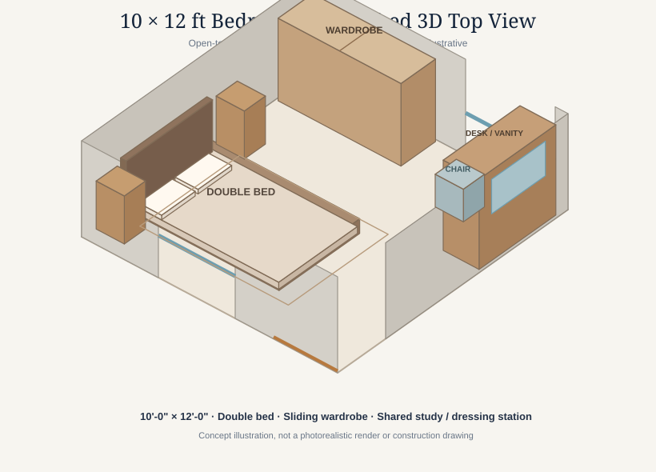

10×12 Bedroom Layout with Wardrobe, Desk and Vanity
A compact bedroom can support sleeping, storage and a small work or dressing station when the furniture is arranged around real clearances rather than decoration alone.
This 10 × 12-foot bedroom concept uses a different arrangement from a conventional centred-bed plan. The double bed sits lengthwise from the west wall, the sliding wardrobe occupies the north-west section, and a compact desk with a fold-away mirror works as both a study station and a dressing table along the east wall. The entrance is placed at the south end of the east wall so the main furniture does not block the door approach.
Dimension basis: The 10 × 12 ft measurement is assumed to be the clear finished internal room size, measured between finished wall faces. It represents 120 sq ft. If 10 × 12 ft is the outside wall dimension instead, the usable room will be smaller. The diagrams are original conceptual vector drawings, not a measured survey, a product specification, an accessibility certification or construction documents.
1. The room brief and orientation
For this guide, the room is 10 feet wide from west to east and 12 feet long from south to north. North is at the top of the 2D plan. The bed has its headboard against the west wall, with its long axis pointing east. This leaves a broad open zone at the east end of the bed for access and movement.
The concept is intended for one or two people who want a double bed, full-height clothes storage, two small bedside surfaces and a modest work or grooming area. The desk and vanity share one 4-foot-long console rather than occupying two separate pieces of furniture. A mirror panel can fold or slide away when the surface is used for a laptop or paperwork.
2. Conceptual 2D furniture plan

3. Furniture schedule and planning dimensions
| Element | Concept size | Position and purpose |
|---|---|---|
| Room | 10 × 12 ft | 120 sq ft clear internal planning rectangle, before any furniture is placed. |
| Double mattress | 4 ft 6 in × 6 ft 3 in (54 × 75 in) | Headboard against the west wall; long axis runs east–west. |
| Bedside tables | 15 × 15 in each | One at either end of the headboard wall; compact lamps can be wall-mounted. |
| Sliding wardrobe | 5 × 2 ft | Along the north wall near the west corner; sliding panels avoid a door-swing conflict. |
| Desk / vanity console | 4 × 1 ft 6 in | Along the east wall in the north half, with a mirror panel and one chair. |
| Chair pull-back zone | 30 in deep | Reserved in front of the desk/vanity; check the chosen chair footprint. |
| Entry door | 2 ft 6 in nominal leaf | On the east wall near the south end; shown opening inward toward the south wall. |
| Windows | 3 ft 6 in north; 3 ft south | Indicative openings on opposite walls; confirm privacy, daylight and rain exposure on site. |
The mattress size is not the same as the outside size of the bed frame. A headboard, side rails and upholstery can add several inches. Measure the actual bed before fixing the final furniture positions. The wardrobe dimension is its approximate outside footprint; handles, skirting and door tracks may change the finished projection.
4. Why the bed is placed against the west wall
Turning the bed so its headboard is on the west wall makes the 10-foot room width work harder. A 54-inch-wide mattress leaves approximately 45 inches between the bed's east end and the east wall. That open strip becomes the main approach to the bed and a route between the entrance and the rest of the room.
The plan keeps the bed's south-side strip at approximately 24 inches. Treat this as a compact secondary route, not the main circulation path. The larger clear zone is on the north side of the bed, where the wardrobe approach and movement through the room can be organised. Do not add a deep chest or loose chair to the narrow south-side strip.
Two 15-inch bedside tables sit at the north and south ends of the headboard wall. They are deliberately compact. If the actual bed frame is wider than the mattress, reduce the table width or use wall-mounted shelves so the bed can still be approached comfortably.
5. Wardrobe placement and storage
The 5 × 2-foot wardrobe sits along the north wall toward the west corner. The diagram leaves about 42 inches between the wardrobe face and the bed zone, creating a standing and access area in front of the sliding panels. Sliding doors are useful here because hinged leaves would consume part of the available floor space.
Plan the wardrobe interior around the household's clothing rather than choosing a cabinet only by its outside size. A practical mix might include a hanging section, shelves, drawers and a high shelf for seasonal items. Check the depth needed for the intended clothes hangers and the clear opening width of each sliding panel. Keep the wardrobe away from window handles, curtains and electrical switches.
6. A shared study desk and dressing table
The 4 × 1½-foot console on the east wall is a dual-purpose station. A mirror panel can be hinged, sliding or mounted on a side panel so it does not permanently occupy the work surface. Use one compact chair or stool that can slide fully underneath when not in use.
The 30-inch chair zone shown in the plan is a planning allowance, not a universal standard. A deep office chair may need more room to move back; a small vanity stool may need less. Test the exact chair with the door open and the bed in place. Keep charging cables, a task light and grooming accessories organised so they do not spread into the main route.
If the room is used for long daily computer sessions, prioritise a comfortable desk height, a suitable chair and glare control. A decorative vanity stool is not automatically a suitable ergonomic work chair.
7. Door, windows and natural ventilation
The entry is shown on the east wall near the south end. Its leaf swings inward toward the south wall, away from the wardrobe and desk/vanity console. Before construction, check the actual hinge side, frame width, door handle projection and the path of the open leaf. A different corridor or adjoining-room arrangement may require the door to move or swing in another direction.
One 3½-foot window is indicated on the north wall and a 3-foot window on the south wall. This gives the concept openings on opposite sides, which may help daylight and cross-ventilation when the site orientation, wind direction and surrounding buildings allow it. Window dimensions and sill heights are illustrative, not code recommendations. Confirm privacy, security, rain protection, shading and local requirements with a qualified designer.
8. Furnished 3D top view

The 3D view is meant to help a reader understand the furniture relationships and the open circulation zone. It is not a second, unrelated design: the bed, wardrobe, console, chair, windows and door follow the 2D plan. Actual furniture models may be larger or smaller than the simple blocks shown.
9. Lighting, electrical and small-room comfort
- General light: Use an even ceiling light or a suitable layered arrangement so the wardrobe and bed are not left in deep shadow.
- Bedside light: Wall-mounted reading lights can keep the 15-inch tables free for a phone, book or water glass.
- Desk light: Add a task light that does not create glare on a laptop screen or mirror.
- Power: Discuss bedside charging, desk outlets, internet access and any grooming appliance points before plastering or finishing.
- Switches: Consider convenient switching near the entry and bed, while keeping switches clear of the wardrobe panels and door frame.
- Safety: Have circuit protection, earthing, cable sizing and outlet locations designed and installed by a qualified electrician under applicable local requirements.
Do not place sockets where the wardrobe will permanently cover them. Avoid loose extension cords across the walking route. The final electrical layout should be coordinated with the actual furniture and the room's ventilation and window positions.
10. Materials and finishes that suit a compact bedroom
A restrained finish palette helps the room feel calm without relying on expensive decoration. Consider a durable, easy-to-clean floor finish, a warm neutral wall colour, a simple fabric headboard and wardrobe fronts that reflect some light without creating glare. A single accent colour in cushions or curtains can add character without visually fragmenting the room.
Choose curtain tracks and window treatments that do not obstruct the opening or reduce ventilation. Use washable paint in areas likely to be touched, and select wardrobe hardware that is easy to maintain. If the room is in a humid climate, ask local suppliers about moisture-resistant board, edge sealing and suitable hardware rather than assuming every decorative panel performs equally well.
11. Suggested room fit-out sequence
- Measure the finished internal room dimensions at several points and check whether the walls are square.
- Record the exact door opening, hinge side, window positions, sill heights and any columns or wall projections.
- Mark the bed, wardrobe, desk and chair footprints on the floor with tape before buying furniture.
- Open the door fully, pull the chair back, slide the wardrobe panels and walk around the bed to test every route.
- Confirm lighting, switches, power outlets, internet access and any air-conditioning provision with qualified tradespeople.
- Complete any required concealed electrical work, then prepare and finish the walls and floor.
- Install the wardrobe and desk/vanity securely using fixing methods suitable for the actual wall construction.
- Place the bed, bedside tables, chair, curtains and lights, then repeat the circulation test with the real furniture.
12. Approximate cost planning without invented prices
This guide does not quote a fixed construction or furniture price because costs vary by country, city, supplier, material grade, custom joinery, labour and the date of purchase. For a useful local estimate, price the room as separate packages:
- Bed frame, mattress and headboard
- Two bedside tables or floating shelves
- Sliding wardrobe, internal fittings and installation
- Desk/vanity console, mirror panel and chair
- Lighting, switches, sockets and electrical work
- Floor finish, paint, curtains and window hardware
- Delivery, assembly, wall fixing and a contingency allowance
Ask at least two or three local suppliers to quote against the same measurements and material specification. Record whether delivery, installation, handles, drawer runners, mirror, wiring and taxes are included. If custom joinery is used, request a dimensioned shop drawing before manufacture. Recheck prices close to the purchase date; any estimate becomes outdated as supplier and labour costs change.
13. Image concepts and suggested alt text
The two diagrams above are the published original vector visuals for this article. If a more realistic interior illustration is commissioned later, it should follow the same layout rather than inventing extra doors or moving the furniture.
Suggested future 3D interior-render prompt:
Create a photorealistic architectural visualization of a compact 10 × 12 ft bedroom, viewed from the south-east corner toward the north-west. Keep the double bed (54 × 75 in mattress) lengthwise from the west wall with its headboard on the west; show two small bedside tables at the headboard ends, a 5 × 2 ft sliding wardrobe on the north wall near the west corner, and a 4 × 1½ ft shared study and dressing console on the east wall in the north half with one tuck-under chair and a fold-away mirror. Show the entry door on the east wall near the south end, a 3½ ft north window and a 3 ft south window. Use warm timber, soft neutral textiles, realistic furniture proportions and uncluttered circulation. Do not add a second desk, extra doors or furniture that blocks the stated clearances. Label it as a conceptual render, not a photograph of a built room.
Suggested alt text if that render is later created: Concept render of a 10 × 12 ft bedroom with a west-wall double bed, sliding wardrobe, combined desk and vanity, two bedside tables and an east-side entrance.
Current visual alt text: Figure 1 describes the dimensioned 2D furniture plan; Figure 2 describes the open-top isometric vector illustration. Neither image is represented as a real completed interior.
14. Limitations and professional checks
This is a furniture-planning concept, not an architectural approval drawing or a guarantee that every household will find the arrangement suitable. It does not specify structural alterations, window performance, fire escape compliance, accessibility compliance, ventilation rates, electrical circuit design or air-conditioning capacity. Those matters depend on the building, site, occupants and local rules.
Have a qualified local architect, building designer or other appropriate professional verify the actual room dimensions, door and window openings, furniture clearances and applicable requirements. Use a qualified electrician for electrical work and a competent installer for wall-mounted furniture. Do not cut or chase structural members to fit a wardrobe, cable or service route without professional approval.
Conclusion
This 10 × 12-foot arrangement uses a west-wall bed, a north-wall sliding wardrobe and one shared desk/vanity console to provide sleeping, storage and a small personal-work zone in 120 square feet. Its main advantage is the open 45-inch zone at the east end of the bed, while its compact 24-inch south-side route needs to remain unobstructed. Measure the actual room and test the real furniture footprints before committing to the layout.
DreamHome Plans — Plan Better. Build Smarter. Live Better.